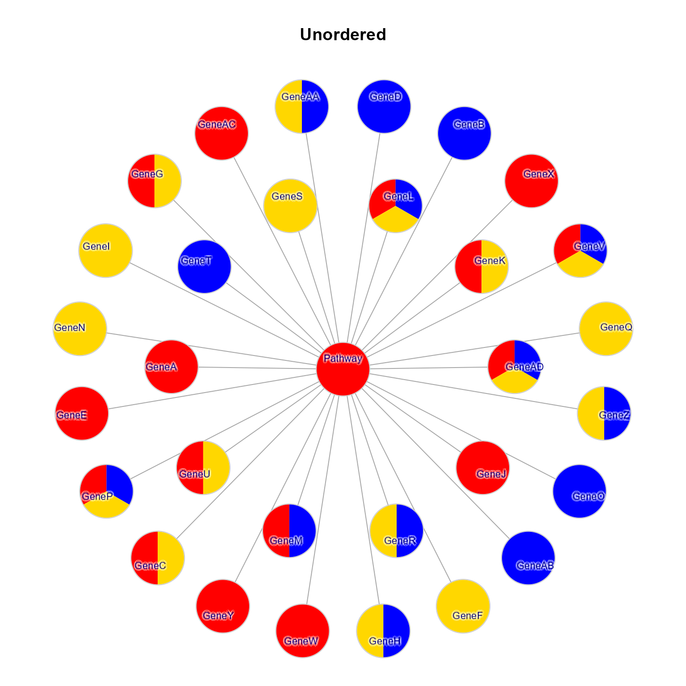
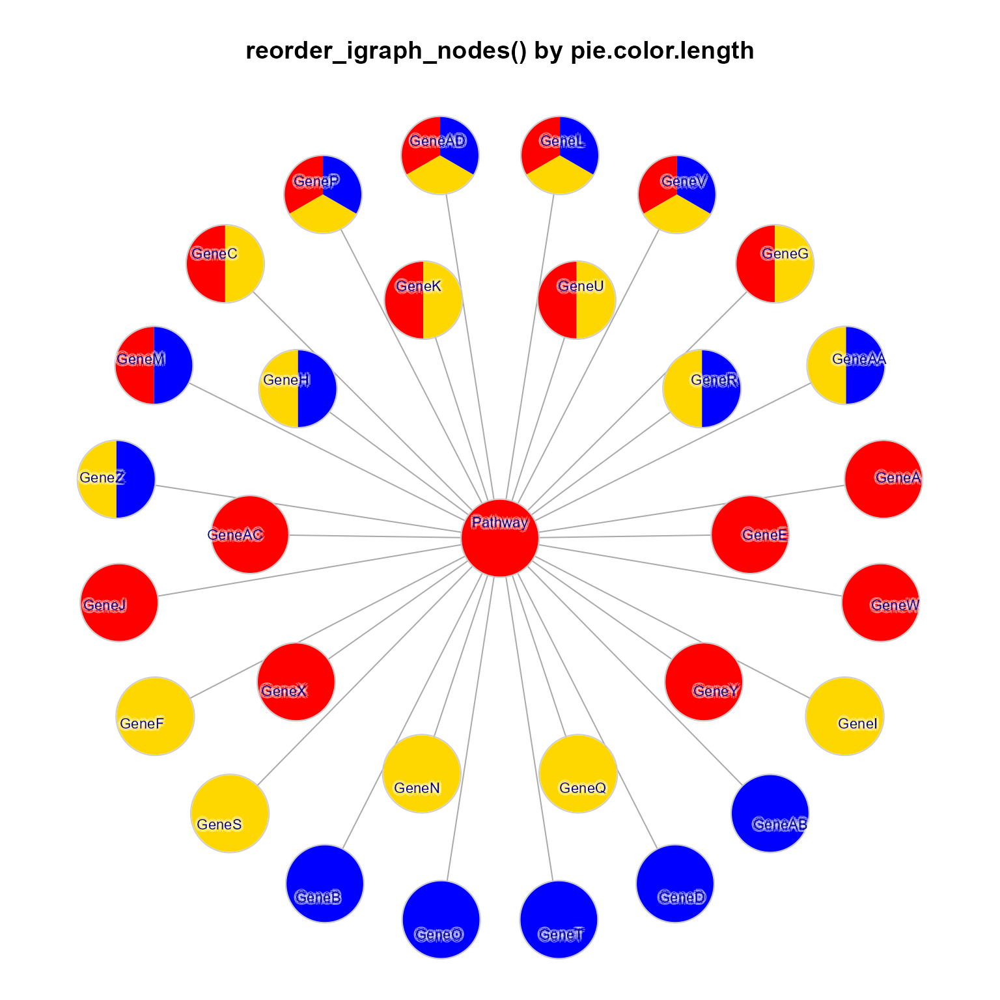
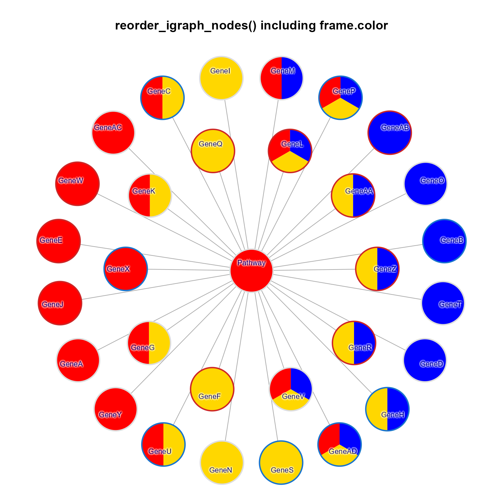
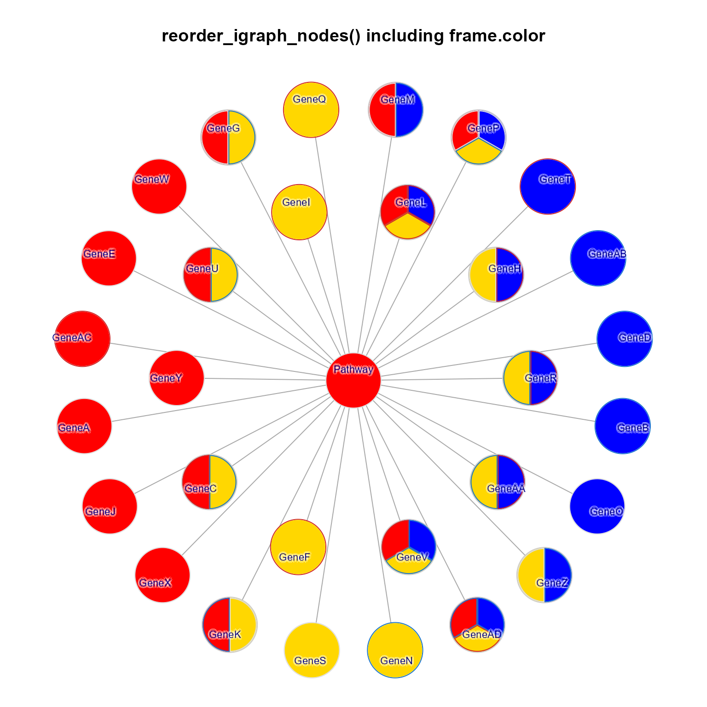
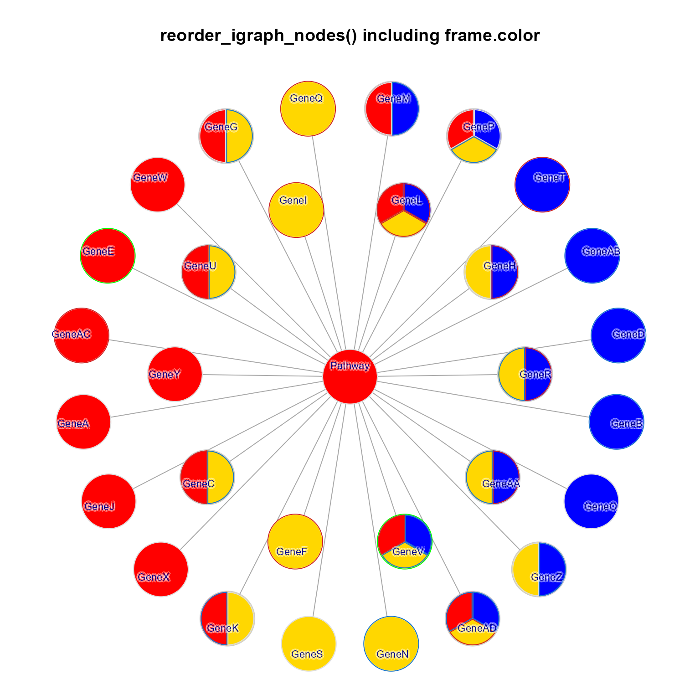
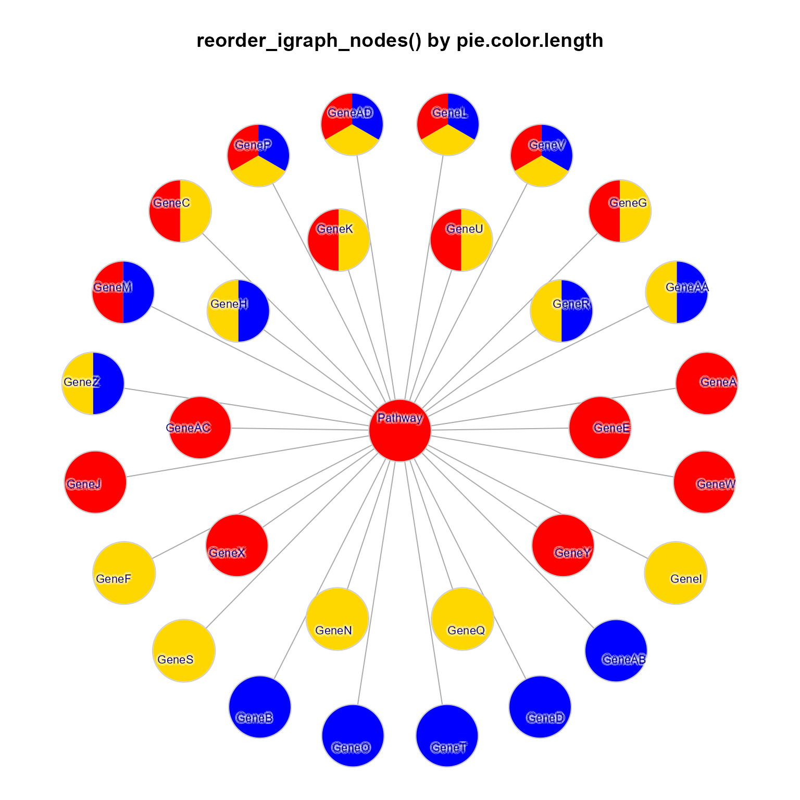
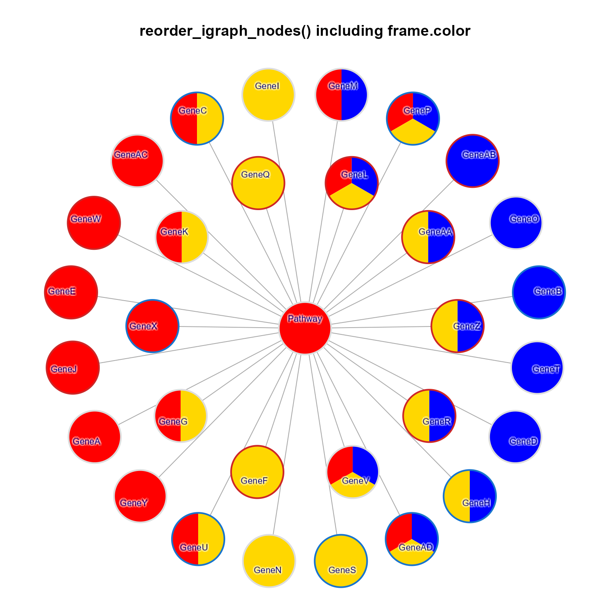
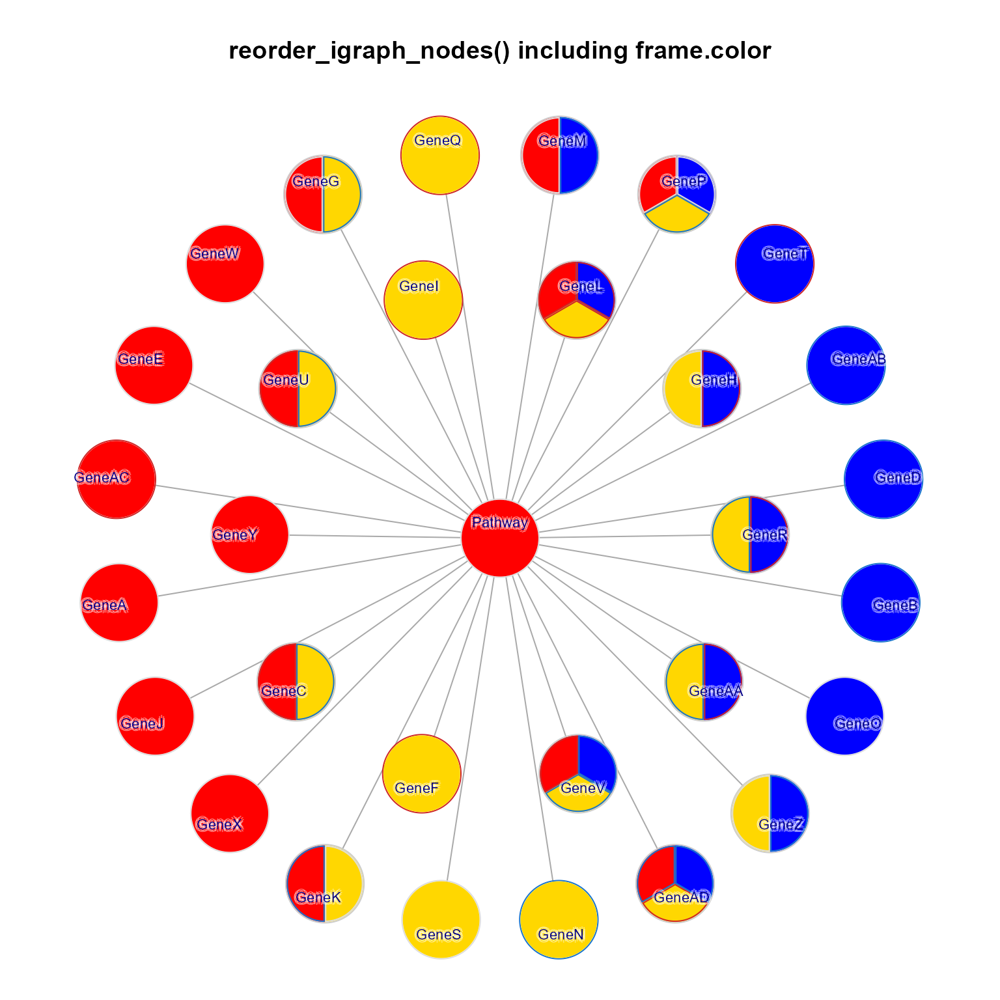
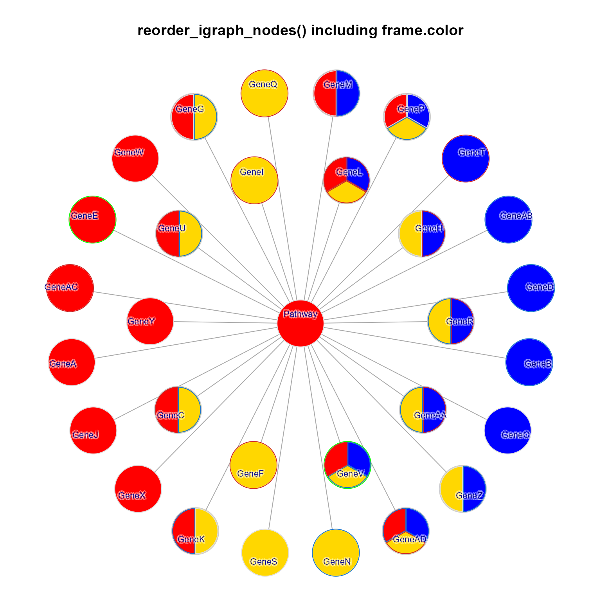

Re-order igraph nodes
Usage
reorderIgraphNodes(
g,
sortAttributes = c("pie.color", "pie.color.length", "pie.border", "pie.border.length",
"coloredrect.color", "coloredrect.border", "color", "frame.color", "label", "name"),
nodeSortBy = c("x", "-y"),
orderByAspect = TRUE,
aspectThreshold = -1.25,
layout = NULL,
nodesets = NULL,
colorV = NULL,
verbose = FALSE,
...
)
reorder_igraph_nodes(
g,
sortAttributes = c("pie.color", "pie.color.length", "pie.border", "pie.border.length",
"coloredrect.color", "coloredrect.border", "color", "frame.color", "label", "name"),
nodeSortBy = c("x", "-y"),
orderByAspect = TRUE,
aspectThreshold = -1.25,
layout = NULL,
nodesets = NULL,
colorV = NULL,
verbose = FALSE,
...
)Arguments
- g
igraphobject, typically expected to have a fixed graph layout stored asigraph::graph_attr(g, "layout"), or supplied vialayoutargument.- sortAttributes
charactervector of node attribute names, to be applied in order when sorting nodes.- nodeSortBy
charactervector containing"x"and"y"indicating the primary axis used to sort nodes. Note that sort order can be reversed by prepending "-", for example"-x"or"-y".- orderByAspect
logicalindicating whether the aspect ratio of each nodeset determines the sort order. WhenorderByAspect=TRUEit ignoresnodeSortByand uses each nodeset aspect ratio to determine the order. Note that the original values fornodeSortOrderare retained, specifically the directional sign for each axis, such that"x"and"-y"will either becomec("x", "-y")orc("-y", "x"). This way, other locales for which bottom-right to top-left ordering is more natural, usenodeSortBy=c("-x", "y")to preserve that order. It will becomec("y", "-x")for tall aspect nodesets. SeeaspectThresholdbelow.- aspectThreshold
numericindicating the aspect ratio threshold below which nodes are sortedc("-y", "x")top to bottom. All aspect ratios (x/y) above this threshold are sortedc("x", "-y")left to right. Aspect ratios with x < y are internally converted to negative ratios (-y/x) such that -1.25 is equivalent to x/y=0.8 for example.- layout
numericmatrix of node coordinates, or function used to produce layout coordinates. When layout isNULL, this function tries to use graph attributeigraph::graph_attr(g, "layout"), otherwise therelayout_with_qfr()is called.- nodesets
characterwith optional subset of nodesets to apply re-ordering. Each value must match names generated byget_cnet_nodeset(), otherwise it will be ignored.- colorV
optional
charactervector that contains R colors, used to order the colors in attributes such as"pie.color"and"coloredrect.color".- verbose
logical indicating whether to print verbose output.
- ...
additional arguments are ignored.
Value
igraph with nodes positioned to order
nodes by color. The layout coordinates are stored in
the graph attribute "layout", accessible with
g$layout or graph_attr(g, "layout").
When there are not multiple nodes sharing
the same neighbors, the original igraph object is
returned, with the addition of layout coordinates.
Details
This function takes an igraph and a layout in the
form of coordinates, or a function used to produce
coordinates. It repositions nodes within equivalent
positions, ordering nodes by color along either the
"x" or "y" direction.
Equivalent node positions are those with the same
neighboring nodes. For example if node "A" and
node "B" both have neighbors c("D", "E", "F")
then nodes "A" and "B" are considered equivalent,
and will be reordered by their color.
This function is particularly effective with concept network (Cnet) graphs, where multiple terms may be connnected to the same concept. For MultiEnrichmap, it typically works when multiple genes are connected to the same pathways. When this happens, the genes are sorted to group the colors.
See also
Other jam igraph layouts:
layout_with_qfr(),
layout_with_qfrf(),
relayout_with_qfr(),
removeIgraphSinglets(),
rotate_igraph_layout(),
spread_igraph_labels()
Examples
require(igraph)
c3 <- c("red", "gold", "blue");
c3l <- list(c3[1], c3[2], c3[3],
c3[c(1,2)], c3[c(1,3)], c3[c(2,3)],
c3[c(1,2,3)]);
set.seed(123);
pc <- c(c3l[1], sample(rep(c3l, c(6,5,5, 4, 1, 4, 4))))
x <- lapply(pc, function(i){
jamba::nameVector(i, paste0("group_", i))
})
g2 <- igraph::graph_from_edgelist(directed=FALSE,
as.matrix(data.frame(
node1=rep("Pathway", length(x)),
node2=paste0("Gene", jamba::colNum2excelName(seq_along(x))))));
V(g2)$pie.color <- x[c(1,seq_along(pc))];
V(g2)$shape <- "pie";
V(g2)$pie <- lapply(lengths(V(g2)$pie.color), function(i){
rep(1, i)
});
V(g2)$frame.color <- "grey80";
V(g2)$pie.border <- NA;
V(g2)$color <- lapply(V(g2)$pie.color, colorjam::blend_colors)
g2 <- relayout_with_qfr(g2, repulse=7, do_reorder=FALSE);
g2b <- spread_igraph_labels(g2, do_reorder=FALSE)
igraph::V(g2b)$label.family <- "Arial"
withr::with_par(list(mar=c(1, 1, 4, 1), xpd=TRUE), {
jam_igraph(g2b,
main="Unordered",
label_dist_factor=3,
label_factor=0.7,
node_factor=1.2,
use_shadowText=TRUE)
jam_igraph(reorderIgraphNodes(g2b),
main="reorder_igraph_nodes()",
label_dist_factor=3,
label_factor=0.7,
node_factor=1.2,
use_shadowText=TRUE);
jam_igraph(
reorderIgraphNodes(g2b, nodeSortBy=c("-y","x"), orderByAspect=FALSE),
main='reorderIgraphNodes(nodeSortBy=c("-y", "x"))',
label_dist_factor=3,
label_factor=0.7,
node_factor=1.2,
use_shadowText=TRUE);
jam_igraph(
reorderIgraphNodes(g2b,
nodeSortBy=c("-y", "x"), orderByAspect=FALSE,
sortAttributes=c("-pie.color.length", "pie.color",
"color", "label", "name")),
main="reorder_igraph_nodes() by pie.color.length",
label_dist_factor=3,
label_factor=0.7,
node_factor=1.2,
use_shadowText=TRUE);
})

 
g2c <- g2b;
set.seed(12)
V(g2c)$frame.color <- sample(c("firebrick3", "#DDDDDD", "dodgerblue3"),
replace=TRUE, size=igraph::vcount(g2c))
V(g2c)$frame.width <- 3;
V(g2c)$pie.lwd <- 3;
withr::with_par(list("lwd"=4, mar=c(1, 1, 4, 1), xpd=TRUE), {
jam_igraph(reorderIgraphNodes(g2c,
nodeSortBy=c("-y", "x")),
main="reorder_igraph_nodes() including frame.color",
label_dist_factor=3,
label_factor=0.7,
node_factor=1.2,
use_shadowText=TRUE);
})

g2d <- reorderIgraphNodes(g2b);
set.seed(12)
mn <- (lengths(V(g2d)$pie.color) > 1);
V(g2d)[!mn]$frame.color <- sample(c("firebrick3", "#DDDDDD", "dodgerblue3"),
replace=TRUE, size=sum(!mn))
V(g2d)$pie.border <- rep(list(character(0)), vcount(g2d))
V(g2d)[mn]$pie.border <- lapply(which(mn), function(i){
jamba::nameVector(
sample(c("firebrick3", "#DDDDDD", "dodgerblue3"),
replace=TRUE, size=lengths(V(g2d)[i]$pie.color)),
names(V(g2d)[i]$pie.color[[1]]))
})
g2e <- reorderIgraphNodes(g2d,
nodeSortBy=c("-y", "x"));
withr::with_par(list("lwd"=4, mar=c(1, 1, 4, 1), xpd=TRUE), {
withr::with_options(list("inner_pie_border"=TRUE), {
jam_igraph(g2e,
main="reorder_igraph_nodes() including frame.color",
label_dist_factor=3,
label_factor=0.7,
node_factor=1.2,
use_shadowText=TRUE);
})})

# frame color sorting
g2f <- g2e;
igraph::V(g2f)["GeneV"]$frame.color <- "green";
igraph::V(g2f)["GeneE"]$frame.color <- "green";
withr::with_par(list("lwd"=5, mar=c(1, 1, 4, 1), xpd=TRUE), {
withr::with_options(list("inner_pie_border"=TRUE), {
jam_igraph(g2f,
main="reorder_igraph_nodes() including frame.color",
label_dist_factor=3,
label_factor=0.7,
node_factor=1.2,
use_shadowText=TRUE);
})})


g2c <- g2b;
set.seed(12)
V(g2c)$frame.color <- sample(c("firebrick3", "#DDDDDD", "dodgerblue3"),
replace=TRUE, size=igraph::vcount(g2c))
V(g2c)$frame.width <- 3;
V(g2c)$pie.lwd <- 3;
withr::with_par(list("lwd"=4, mar=c(1, 1, 4, 1), xpd=TRUE), {
jam_igraph(reorderIgraphNodes(g2c,
nodeSortBy=c("-y", "x")),
main="reorder_igraph_nodes() including frame.color",
label_dist_factor=3,
label_factor=0.7,
node_factor=1.2,
use_shadowText=TRUE);
})

g2d <- reorderIgraphNodes(g2b);
set.seed(12)
mn <- (lengths(V(g2d)$pie.color) > 1);
V(g2d)[!mn]$frame.color <- sample(c("firebrick3", "#DDDDDD", "dodgerblue3"),
replace=TRUE, size=sum(!mn))
V(g2d)$pie.border <- rep(list(character(0)), vcount(g2d))
V(g2d)[mn]$pie.border <- lapply(which(mn), function(i){
jamba::nameVector(
sample(c("firebrick3", "#DDDDDD", "dodgerblue3"),
replace=TRUE, size=lengths(V(g2d)[i]$pie.color)),
names(V(g2d)[i]$pie.color[[1]]))
})
g2e <- reorderIgraphNodes(g2d,
nodeSortBy=c("-y", "x"));
withr::with_par(list("lwd"=4, mar=c(1, 1, 4, 1), xpd=TRUE), {
withr::with_options(list("inner_pie_border"=TRUE), {
jam_igraph(g2e,
main="reorder_igraph_nodes() including frame.color",
label_dist_factor=3,
label_factor=0.7,
node_factor=1.2,
use_shadowText=TRUE);
})})

# frame color sorting
g2f <- g2e;
igraph::V(g2f)["GeneV"]$frame.color <- "green";
igraph::V(g2f)["GeneE"]$frame.color <- "green";
withr::with_par(list("lwd"=5, mar=c(1, 1, 4, 1), xpd=TRUE), {
withr::with_options(list("inner_pie_border"=TRUE), {
jam_igraph(g2f,
main="reorder_igraph_nodes() including frame.color",
label_dist_factor=3,
label_factor=0.7,
node_factor=1.2,
use_shadowText=TRUE);
})})
